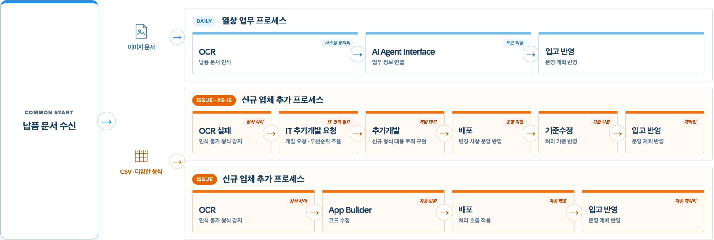

App Builder Explanation

Change Adaptation
AI Coding으로 신규 문서 형식에 맞춰 처리 기준과 코드를 보완합니다.
Deployment & Reprocessing
변경 내용을 배포하고, 신규 문서를 재처리해 입고 업무에 반영합니다.

AI Coding으로 신규 문서 형식에 맞춰 처리 기준과 코드를 보완합니다.
변경 내용을 배포하고, 신규 문서를 재처리해 입고 업무에 반영합니다.